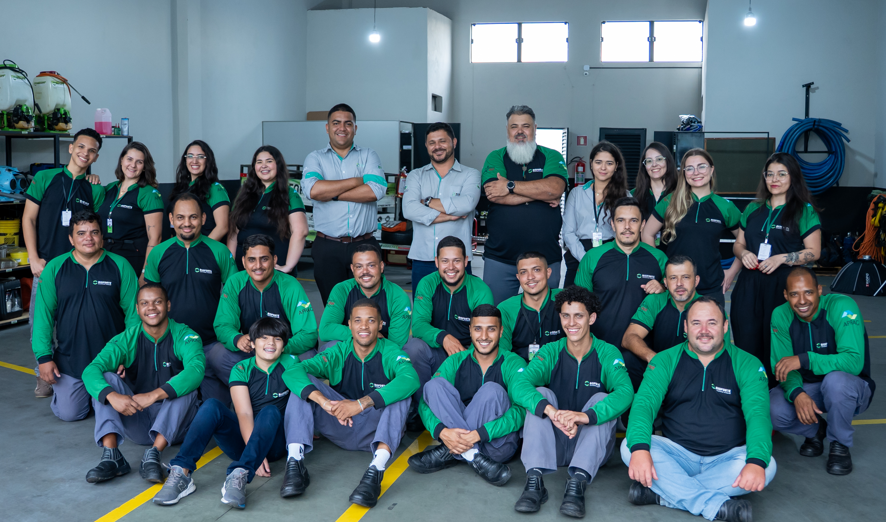

Dúvidas Frequentes
Conheça as dúvidas frequentes dos clientes e saiba tudo antes de contratar um serviço
Não. O fato de o rato secar ou não, após sua morte, esta relacionado diretamente com o local em que se encontra a carcaça e não com o raticida ingerido. A quantidade de umidade no local é que irá determinar o tipo de decomposição, desta forma desidratando ou não o animal.
Sim, assim como os cupins, algumas espécies de formigas também fazem revoadas para se reproduzir.
Não, o cupim se alimenta exclusivamente de materiais que contenham celulose, tais como papéis, móveis, alguns tecidos, etc. No entanto, eles podem surgir em sua parede, se movimentando através das falhas e trincas.
O período entre o nascimento e a dispersão dos filhotes varia bastante. Para Tityus serrulatus é de aproximadamente 14 dias. ... A espécie T. serrulatus (escorpião amarelo) reproduz-se também por partenogênese. Assim, bastam as fêmeas e todo indivíduo adulto pode parir sem a necessidade de acasalamento.
